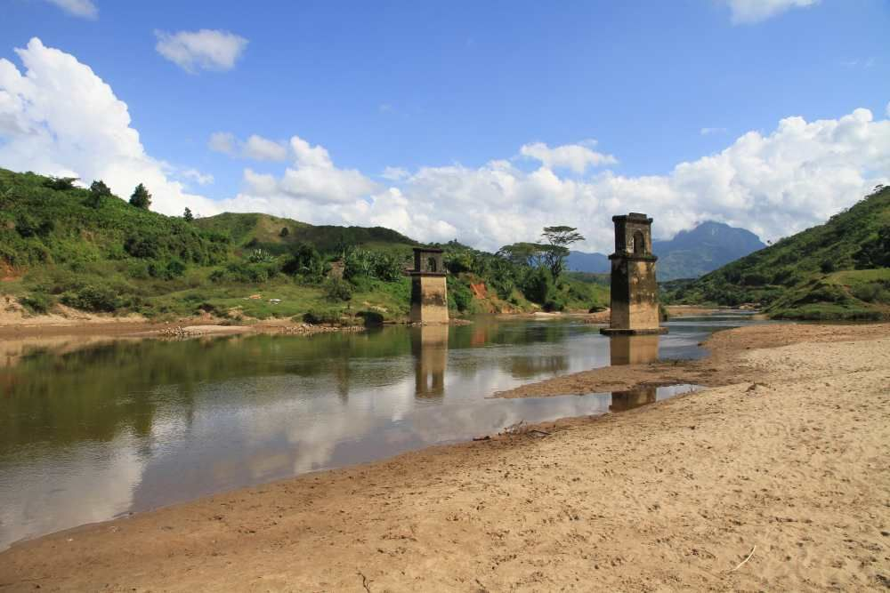
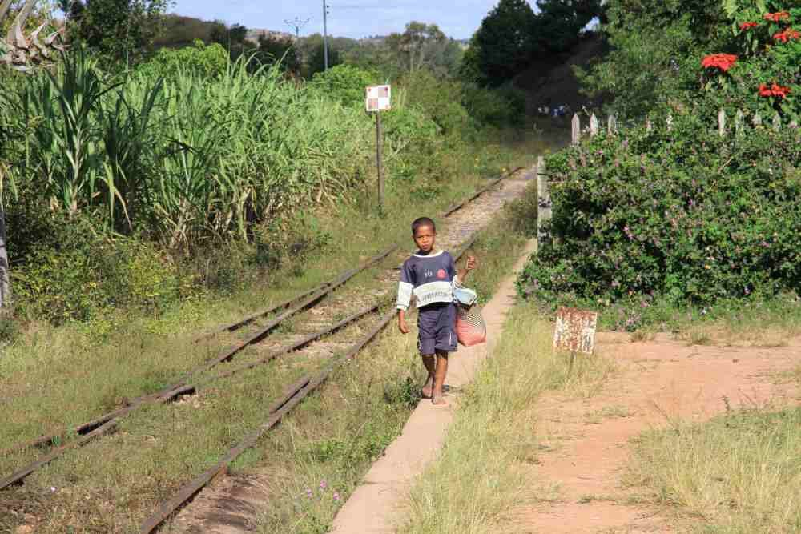

Itinéraire de voyage : Le Sud-Est de Madagascar hors des sentiers battus – MG115
Madagascar : de Fort-Dauphin à Antananarivo – 15 jours
Au cours de ce périple intensif et complet, nous apprenons à mieux connaître le Sud-Est de Madagascar.

Dans les rizières de Madagascar
Après l’idyllique ville côtière malgache de Fort-Dauphin, nous partons à la découverte d’étendues côtières pitto-resques. Mais voici qu’arrivent les contreforts de la chaîne de montagnes de l’Est, suivis des marécages et des embruns de l’Océan Indien et de ses nombreux villages de pêcheurs. Sans oublier les forêts d’épineux et des réserves naturelles de Madagascar peu fréquentées…
Et bien sûr : le voyage en train – dans une ambiance inoubliable !
Une expérience unique à Madagascar, hors des sentiers battus et où vous ne rencontrerez que de rares touristes ! Place à la rencontre avec les populations locales !
L’essentiel de ce circuit Le Sud-Est de Madagascar hors des sentiers battus :

«L’Express de la jungle », le FCE « Fianarantsoa – Côte Est »
- Petites villes de la Côte Est
- Voyage en train à travers la forêt tropicale
- Nature dans différentes réserves naturelles peu fréquentées
Ce circuit est réalisable d’août à décembre.
Téléchargez ici notre proposition de circuit.
Naturellement, cette proposition de circuit peut être adaptée à vos souhaits ou combinée avec d’autres itinéraires. Chaque voyage est planifié et organisé en étroite concertation avec vous. Contactez-nous à tout moment pour plus d’informations, planifier votre voyage ou pour toute question concernant Madagascar.